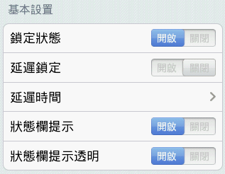
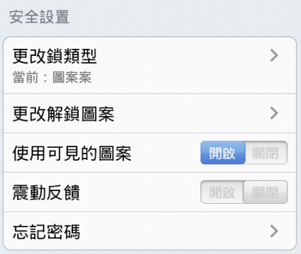
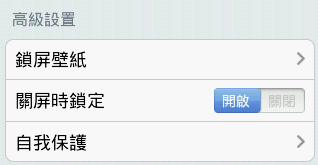

啟動/關閉智能鎖（如果您未設置過解鎖圖案，在啟動鎖定功能時，您需要設置您的解鎖圖案）。
在一定的延遲鎖定時間裡，被保護的程序可以不需要再次輸入圖形鎖解鎖。
設置您的延遲鎖定時間。
設置是否在狀態欄提示智能鎖狀態，建議您開啟，以防止智能鎖被任務管理器強行停止而導致保護失效。
設置是否讓狀態欄提示圖標透明。

選擇使用圖案鎖、PIN鎖或者密碼鎖。
更改解鎖圖案、PIN或者密碼。
解鎖圖案鎖時讓圖案是否可見。
設置是否需要在輸入圖形鎖時進行震動反饋。
設置您的驗證郵件或密碼重置問題，可以幫助您在忘記密碼時重置解鎖圖案、PIN或者密碼。

選擇您喜歡的鎖屏壁紙。
在手機屏幕關閉時，重新鎖定被保護的應用程序。
選擇是否鎖定系統程序管理以及android市場以達到自我保護（默認全部鎖定）